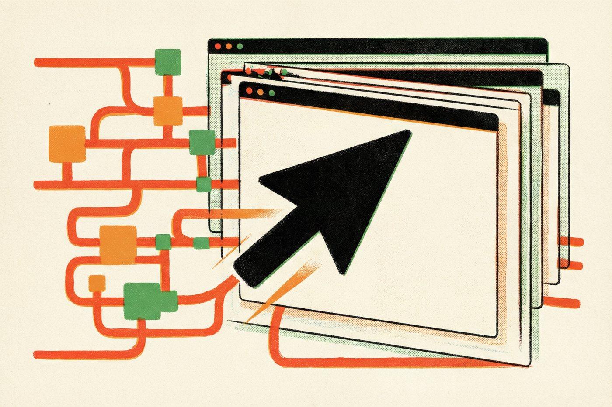

Une base de données, c’est un classeur avec des règles
Sans base de données, votre boutique en ligne vendrait le même livre à deux personnes. Ou perdrait la moitié de ses commandes au redémarrage.

Un tableur suffit pour gérer une liste d’invités. Il devient vite dangereux pour une boutique, une banque ou un hôpital. Pourquoi ? Parce qu’une base de données ne se contente pas d’enregistrer : elle garantit que les informations restent cohérentes, même quand plusieurs personnes écrivent en même temps.
,Le carnet de notes ne suffit pas
,Imaginez un cahier où chaque vente est notée à la main. Deux vendeurs consultent le stock, voient « 1 exemplaire restant », le vendent chacun. Résultat : deux clients, un livre. Le problème n’est pas la vitesse d’écriture, mais l’absence de règle partagée au moment de la décision.
,Une base de données résout ce type de situation avec des transactions : un ensemble d’opérations qui réussit entièrement ou échoue entièrement. Réserver un livre puis décrémenter le stock se fait dans une même unité. Si l’une des étapes échoue, tout est annulé.
,Tables, lignes, colonnes
,La base relationnelle, la plus répandue, range les données en tables. Une table « clients » contient des lignes (un client par ligne) et des colonnes (nom, e-mail, date d’inscription). Une table « commandes » contient les commandes. Chaque colonne a un type : texte, nombre, date, booléen.
,Ce cadre paraît rigide. C’est justement sa force : impossible d’inscrire « hier » dans une colonne de date, ou de créer une commande sans client. La base refuse les données qui ne respectent pas les règles qu’on lui a données.
,La clé qui relie tout
,Chaque ligne possède souvent un identifiant unique, la clé primaire. Une commande référence le client par sa clé : c’est une clé étrangère. Ces liens évitent de recopier le nom et l’adresse du client dans chaque commande — une source classique d’incohérences.
,Relier les tables permet ensuite de poser des questions : « quels clients ont commandé plus de trois fois ce mois-ci ? », « quel produit revient le plus souvent ? ». C’est le rôle du langage SQL, qui reste, des décennies après sa création, l’une des compétences les plus utiles en informatique.
,Une base de données ne stocke pas seulement des informations. Elle fait respecter des promesses.,
Trouver vite : les index
,Chercher dans un million de lignes sans index, c’est feuilleter tout un dictionnaire pour trouver un mot. Un index est une structure de tri qui permet d’aller directement à la bonne page. Il accélère les lectures, mais ralentit un peu les écritures et occupe de l’espace : tout est affaire de compromis.
,SQL, NoSQL : un choix, pas une religion
,Les bases relationnelles excellent quand les données sont structurées et les liens importants. Les bases dites NoSQL (documents, clé-valeur, graphes) proposent d’autres modèles, souvent plus souples ou plus distribués. Elles ne remplacent pas les premières : elles répondent à d’autres contraintes, comme des volumes massifs ou des schémas très changeants.
,Une base de données correctement conçue est invisible. Elle ne se remarque que le jour où elle manque : quand un doublon apparaît, qu’une commande disparaît ou qu’un fichier est écrasé. C’est une infrastructure discrète, mais c’est souvent le cœur d’un service.
L’essentiel en 3 points
- Une base garantit la cohérence des données grâce à des règles et des transactions.
- Les clés relient les tables et évitent les duplications dangereuses.
- Les index accélèrent les recherches, au prix d’un peu d’espace et d’écriture.

Du clic à la page : le voyage de 300 millisecondes
Vous tapez une adresse, vous appuyez sur Entrée, la page apparaît. Entre les deux, une chaîne logistique invisible.

Une API, c’est une prise électrique pour logiciels
Derrière chaque paiement en ligne, chaque bulletin météo et chaque réponse de chatbot, il y a une API. Voici ce que c’est, sans jargon.